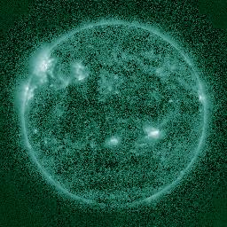
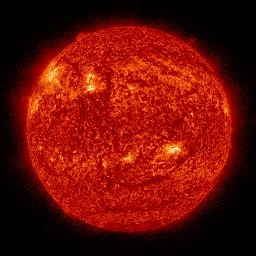
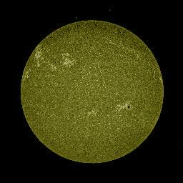
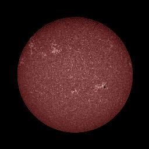

The Sun, like all active stars, is constantly producing huge electromagnetic flares. Every now and then (on expectation every ~200 years) these flares hit the Earth; the last time was in 1859, and the electromagnetic field was so powerful that one could see the northern lights all the way down to Mexico — not a bad secondary effect! However, back in 1859 we didn’t have a massive power grid, satellites, wireless communications, GPS, airplanes, space stations, etc. If a flare hits the Earth now, all these systems would be crippled, and repairing them would take years and would cost trillions of dollars.
Of course, we cannot stop these flares any more than we can stop an earthquake. If it hits us, it hits us. However, like with an earthquake, we can act ahead. If we know that one flare is coming, we can turn everything off, let it pass, and then turn everything back on, like nothing happened. Hence the NASA and other institutions are investing a great deal of time, effort and money to develop techniques that enable us to predict that a flare is coming.
Solar images are among the most promissing pieces of data towards flare prediction. For years we have been collecting high-definition images of the sun under multiple wavelengths:
|  | |||
|---|---|---|---|
|  |  |  |
Our work investigates machine learning techniques capable of predicting solar flares from images like these. The main challenge is that solar flares are relatively rare, resulting in extremely uneven sampling across classes (for example, we have a lot no flare cases, and just a handful of flare cases), which severely complicates training.